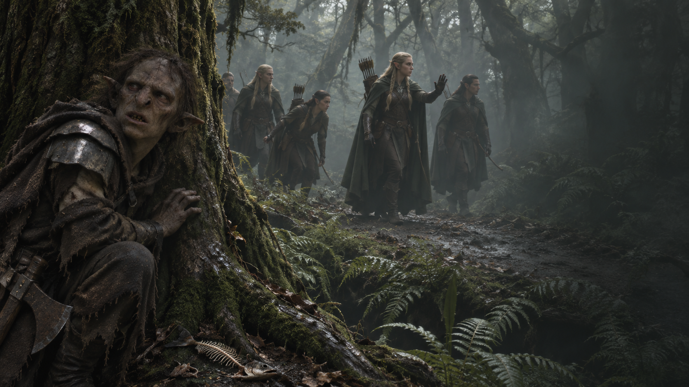

Chapitre III · À couvert
La Lisière des bois
Des pas dans les fougères. Des oreilles à l’affût.
Observer la patrouilleDes oreilles dans les arbres
Les rochers laissent place aux premiers arbres. Sur une racine, vous découvrez une trace humide et quelques restes de poisson cru. Vous vous accroupissez pour examiner le sol.
Des voix légères vous arrêtent net. Entre les troncs, des silhouettes portent des arcs et des capes discrètes. Des Elfes. Vous vous plaquez derrière un arbre en retenant votre souffle.
Avec un peu de chance, ils vous prendront pour une souche. Une souche particulièrement malodorante.
Une Elfe lève la main. La patrouille s’immobilise à quelques pas de votre cachette.
« Des poissons dévorés, des empreintes sans chaussures… Il est passé ici. Surveillez le sentier. »
Eux aussi cherchent Gollum. Vous apercevez un fossé couvert de fougères derrière vous : en rampant sans bruit, vous pourriez contourner la patrouille et retrouver sa piste plus loin.
Ou vous pourriez charger. Ils ne sont que quatre, tous armés d’arcs, et vous avez une hache rouillée. Sur le papier, votre plan présente quelques faiblesses.